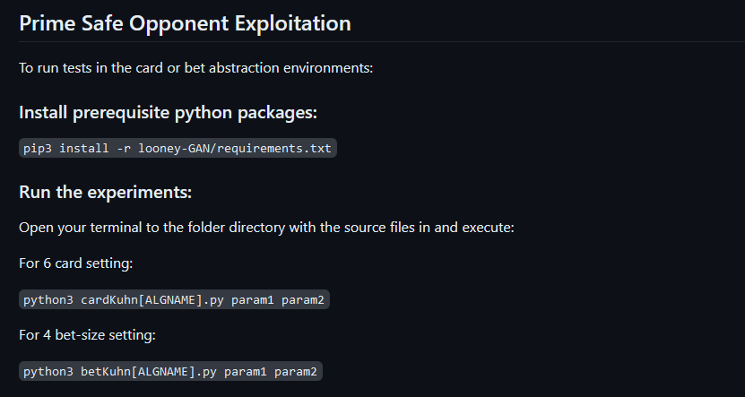
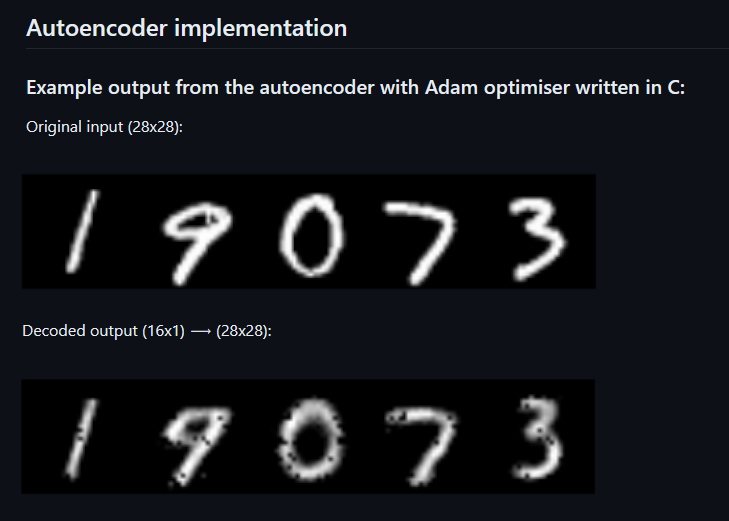
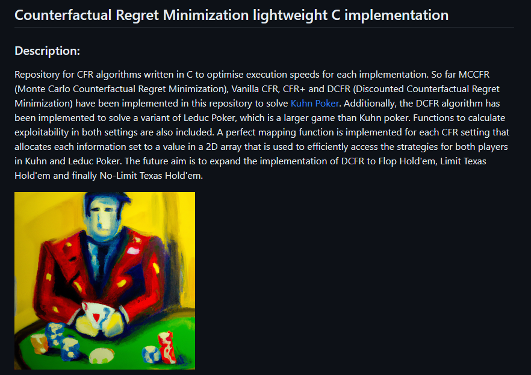
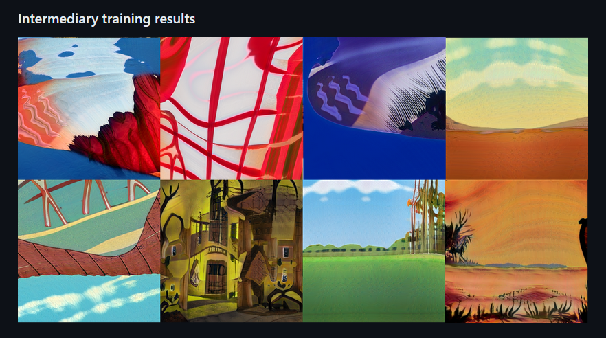

Introduction
A personal website detailing projects I have worked on. Computer Science with Mathematics graduate and current Artificial Intelligence Masters student.
 My System
My System - Software and hardware I use.
- ✉️ Contact
- My contact information.
My Projects
- 💵 Prime Safe Opponent Exploitation
- Code for experiments used in research paper focusing on allowing any player in an imperfect information game to attempt to benefit from exploiting their opponent’s weaknesses. Concepts from game theory are utilised to guarantee a meaningful known worst case payoff.
- 🔢 Autoencoder from Scratch
- Writing an autoencoder using no convolutional layers in Python and Cython as well as from scratch in C to compare the execution times of each implementation. The encoder and decoder parts are comprised of two dense layers each. The Adam optimiser is included in each model.
- Counterfactual Regret Minimization implementation in C
- A project to write Counterfactual Regret Minimization (CFR) algorithms in C to optimise execution speeds for each implementation. CFR is an iterative tree traversal algorithm used to compute optimal strategies in imperfect information games. I implemented three variants of the original algorithm including the most recent optimisations that solve smaller versions of poker games.
- 🖼️ Generative Adversarial Network to generate cartoon backgrounds
- GAN model that generates cartoon backgrounds similar to those produced by the animators of Looney Tunes (1930-69). The model was trained using the open-source StyleGAN3 network infrastructure provided by NVIDIA.
-
 GitHub
GitHub - Other software and projects.